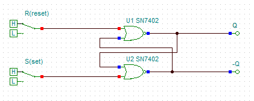

о выполнении
КРЗ № 1
по курсу
"Электроника и Схемотехника"
на тему:
"Демонстрация работы моделей однокаскадных усилителей и основных ТРИГГЕРОВ"
Составил cтудент: Огородников Филипп
Группа: КТ-21-05
РГУ им. И.М.Губкина факультет: ФКБ ТЭК
|
По результатам выполнения Лабораторной работы № 0, показать: 1)'Работу' простейшего усилительного каскада на биполярном транзисотре (определить диапозон линейного усиления, определить коэффициент усиления, снять и построить основные характеристики такого усилителя) 2)'Работу' простейшего усилительного каскада на микросхеме Операционного Усилителя (ОУ) (определить диапозон линейного усиления, определить коэффициент усиления, снять и построить основные характеристики такого усилителя) По результатам выполнения Лабораторных работ № 1 и № 2 показать: 1)'Работу' простейших ТРИГГЕРОВ: - асинхронного RS (на логических элементах) - асинхронного RS (на микросхеме JK) 2)'Работу' D-триггера на логических элементах "И-НЕ" 3)'Работу' D-триггера на микросхеме JK 4)'Работу' T-триггера (из D-триггера на микросхеме JK) |
-
Задача 1.1
Воспользуемся компьютерной моделью Tina и соберем простейший усилительный каскад на биполярном транзисторе:
Далее нам необходимо его настроить:
Демонстрация работы усилительного каскада:
Определим его характеристики:
Сопротивление по постоянному току:
Построение нагрузочной прямой по постоянному току:
Сопротивление нагрузки каскада по переменному току:
Амплитуда тока нагрузки:

Максимально возможная выходная мощность, которую обеспечивает каскад на заданной нагрузке без заметно искаженного сигнала:
Амплитуда переменной составляющей коллекторного тока:
Требования к положению рабочей точки: ток покоя коллектора
Координаты рабочей точки А:
Координаты рабочей точки А:
Построение нагрузочной прямой по переменному току:
Максимальный и минимальный токи транзистора:
Сопротивления базового делителя:

Входное сопротивление каскада:
Расчёт ёмкостей навесных конденсаторов и коэффициентов частотных искажений на нижней граничной частоте:

Коэффициенты усиления усилителя
Задача 1.2
Воспользуемся компьютерной моделью Tina и соберем простейший усилитель на микросхеме ОУ:
Настраиваем осциллограф и проверяем работу усилителя:
На канале (Channel) VM2, во вкладке Volts/Div мы выбираем 100mV, а на канале VM1 - 1mV, как можно увидеть 2 волны имеют одну амплитуду.
Для того, чтобы определить коэффициент усиления, нам нужно VM2/VM1 (100/1), коэффициент усиления = 100
Вывод: Наша схема усиливает сигнал в 100 раз.
Задача 2.1
Простейший асинхронный RS-триггер (ИЛИ-НЕ):
Схема построена, теперь выбираем режим:
Наш переключатель обладает двумя значениями: H - High, L - Low, их можно считать 1 и 0 соответственно.

Сейчас наша система находится в состоянии "1 и 1", что недопустимо, потому что работа триггера становится непредсказуемой. (Это можно увидеть на наших выходах, оба горят синим цветом), что невозможно по определению, если Q - синий, то отрицание (-Q) - должно быть противоположным (красным).
Переключаем систему в состояние "0 и 1" и получаем на выходе Q - 1, а -Q - 0:
Переключаем систему в состояние "0 и 0" и видим, что система показывает прошлое состояние:
Переключим систему в состояние "1 и 0" и видим, что система изменилась (Q - 0,а -Q - 1)
Переключим систему обратно в состояние "0 и 0" и сделаем вывод.
Вывод: Состояние "0 и 0" - сохраняет предыдущее состояние системы, а состояние "0 и 1" и "1 и 0" - переключает систему.
Простейший асинхронный RS-триггер (И-НЕ):
Схема построена, выбираем режим Digital.
Состояние "1 и 1" - недопустимо, начинаем с состояния S - 1, R - 0.
Получаем: Q - 1, -Q - 0.
Переключаем в состояние "0 и 0":
Видим, что ничего не изменилось.
Переключаем в состояние "0 и 1":
Видим, что система изменилась.
Вывод: Результат на выходе U - зависит от наличия 1 на выходе S (Set), мы можем устанавливать значение и сбрасывать его до 0, если на входе R(reset) - установлена 1.
D-триггер на логических элементах:
Пока вход C - выключен, схема находится в режиме ожидания:
Как только вход C - включен, с помощью входа D мы управляем схемой:
Вывод: D = 1 - на выходе 1, D = 0 - на выходе 0.
D-триггер на микросхеме JK:
Работоспособность проверим на T-триггере из D-триггера на микросхеме JK.
T-триггер из D-триггера на микросхеме JK:
Сверим работоспособность нашего триггера с таблицей истинности T-триггера:
Работоспособность продемонстрировал в виде gif:

Вывод: Как мы видим, работа триггера полностью соответствует таблице истинности T-триггера.
После выполнения Лабораторных работ №0,1,2, а также КРЗ1, я сам смог посмтроить модели усилителей на ОУ, мультивибратор, простейшие Глин, микросхемы Логики, RS,D,T-триггеры и счетчики.
Проверил работу простейшего усилительного каскада на биполярном транзисторе (смог снять его характеристики), так же я снял характеристики и определил коэффициент усиления работы каскада на микросхеме ОУ.
Смог показать работу асинхронного RS-триггера (на лог. элементах и на микросхеме JK), D-триггера (на лог. элементах "И-НЕ", а также на микросхеме JK), работу T-триггера (из D-триггера на микросхеме JK).